2.7 Reconstruction: cameras, points, and meshes
C. Reconstruction and generation · COLMAP, DUSt3R, and VGGT
Reconstruction estimates a 3D description from photographs. Given overlapping views of the same cabinet, estimate its shape and where the cameras were when the photographs were taken.
From photographs to cameras and geometry
- 012D photographsSeveral views of the cabinet
- 02Choose a methodCOLMAP, DUSt3R, or VGGT
- 03Cameras + 3D geometryCamera settings + surface positions
Each complete workflow can provide camera estimates and 3D surface positions. The methods differ in how they obtain these estimates and whether the geometry is represented by sparse points, dense pointmaps, or depth maps.
Section 2.4 supplies a scene and camera to make a picture. Here, the pictures are the evidence used to estimate those unknowns. A photograph does not uniquely determine the hidden surfaces, so reconstruction gives an estimate rather than an exact reversal.
Inverse rendering describes inferring scene properties from images, often including shape, materials, and lighting. One example recovers all three together.[1] This section focuses on camera and geometry reconstruction. COLMAP[2] finds the same details in different photographs, then uses their image positions to estimate cameras and 3D points. DUSt3R[3] predicts 3D points from image pairs and aligns the pair results. VGGT[4] jointly processes images to predict cameras and geometry. These are three alternative methods for estimating the photographed scene.
2.7.1 Reconstruction and generation: the workflow
Where the methods fit
Reconstruction uses observations to estimate the scene that was photographed. Generation uses a pretrained model to propose an asset from an image or prompt. Both can produce data in the representations introduced earlier; which output is available depends on the method.
Create 3D data, then render a view
Follow either creation route, then use the renderer for its output.
- 01Renderer + virtual cameraCalculate a picture from the chosen viewpoint.
- 022D imageA view of the cabinet.
During 3DGS / NeRF fitting: render → compare with the input photographs → update the 3D representation → render again.
COLMAP, DUSt3R, and VGGT offer different routes to camera and geometry estimates. Those geometry estimates are already reconstruction results. With appropriate preparation, they can support surface reconstruction, Gaussian fitting, or NeRF training. The downstream method determines which data and file formats we need. TRELLIS illustrates a pretrained generation route in Section 2.10.
Use rendering to check an estimate
In 3DGS and NeRF, rendering checks how well the current 3D description explains the photographs.
Check a 3D estimate
- 01Estimate 3D
Propose a cabinet representation from its photographs.
- 02Render and compare
Draw that representation from the photograph’s camera and compare the two images.
Adjust the 3D estimate using the image differences, then render and compare again.
If the rendered handle appears in the wrong place, the 3D estimate may need to change. The original 3DGS and NeRF methods repeat this comparison across several camera views. Adjusting a representation to match the observed images is called fitting.
The photographs are the evidence; the 3D representation is what we adjust. Rendering is the check that connects them: it lets us compare a picture made from the estimate with an actual input picture.
2.7.2 What information do we need?
Keep the cabinet, door, and drawer still while photographing from different positions. The images are the observations we want the reconstruction to explain.
- Camera parameters
- Where was the camera, which way did it point, and what were its lens settings for each image? These determine the line of sight for each pixel.
- Geometry estimates
- Where might the cabinet’s surfaces be in 3D? Depth estimates and 3D points provide information about their locations.

The following examples show how COLMAP, DUSt3R, and VGGT obtain this information. DUSt3R and VGGT use pretrained models to predict geometry for a new scene. When camera positions and settings are already known, we can supply those values directly.
2.7.3 COLMAP: match details across views
COLMAP computes a reconstruction from matching details in the current photographs. For the cabinet, it finds corners and handle details that appear in several views. Their positions in the images provide geometric relationships that COLMAP uses to calculate where the cameras were and where those details lie in 3D. It carries out this calculation for each new set of photographs. Follow the drawer corner marked A:


1. Find the same detail in different photos
A marks the same cabinet corner in all three views. Its pixel position changes from one picture to another. A match records that two image locations show the same physical detail. COLMAP compares distinctive small image patches to find many such correspondences.

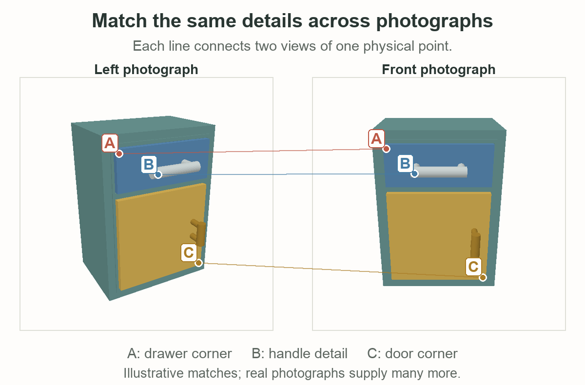
2. Estimate where the cameras were
The image positions of many matched points constrain how the views relate to one another. COLMAP uses these relationships to estimate the cameras’ relative positions and viewing directions. Lens information is supplied when available or estimated as part of the reconstruction. Many matches work together to determine a consistent arrangement.
3. Locate the matched points in 3D
With estimated cameras, the pixel marked A in each photo defines a line of sight into the scene. COLMAP estimates A’s 3D position where these lines agree most closely. Repeating this for other matches produces a collection of surface points. This step is called triangulation.


4. Check the estimates against the photographs
COLMAP projects each estimated 3D point back into its photographs. The projected A should land on the observed A. It refines the camera and point estimates to reduce these image-position differences. As more photographs are added, the reconstruction grows and is refined again.
This camera-and-point reconstruction is called Structure from Motion (SfM). The result is camera parameters plus a sparse point cloud: sampled locations on recognizable details. Textured areas often supply more matches than plain panels. COLMAP’s illustrated workflow.
Keep the photographs together with these camera and point estimates. They can be prepared for 3DGS or NeRF, as described in Section 2.7.6. COLMAP’s dense reconstruction tools can instead continue toward depth maps and denser surfaces, as described in Section 2.7.7.
2.7.4 DUSt3R: from image pixels to 3D points
DUSt3R is a pretrained model that predicts where photographed surfaces lie in 3D. Its starting inputs are RGB images with overlapping views. For this cabinet, we use left, front, and right views while the drawer and door remain still. The model predicts geometry from image pairs; camera information can then be recovered from those predictions. DUSt3R paper.
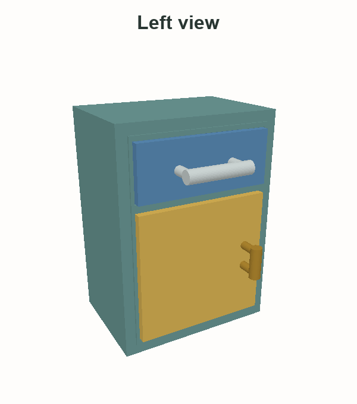
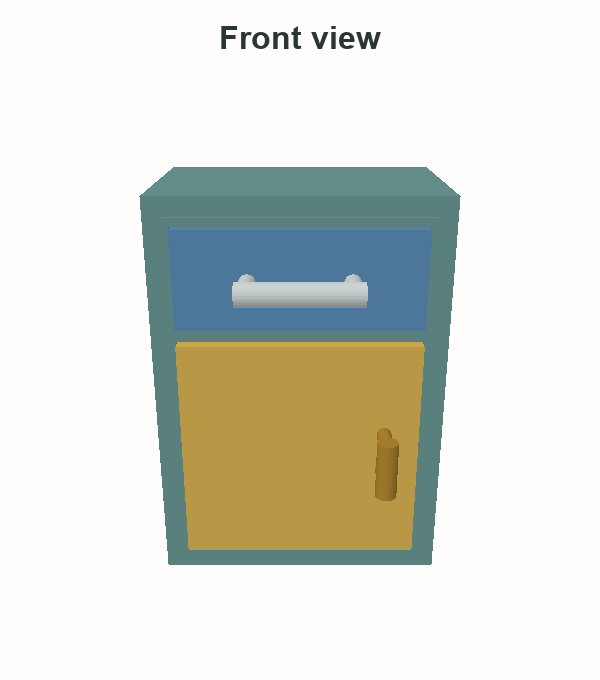
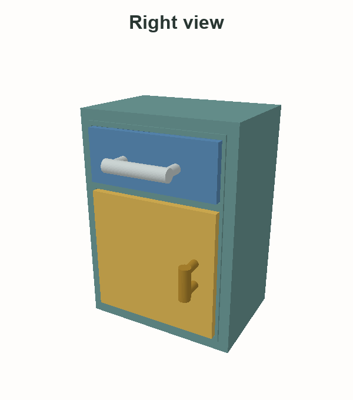
Scripted illustrations using the book’s shared cabinet. These views stand in for photographs; the point and alignment diagrams below explain the workflow. See the official DUSt3R demo for learned-model results.
Predict positions from an image pair
Start with the left and front images. DUSt3R processes them together and produces a pointmap for each image. A pointmap follows the image’s rows and columns, but each entry holds three numbers, (X, Y, Z): the predicted spatial position of the surface seen at that pixel. Both pointmaps from this pair use the same coordinate frame, anchored to the first camera. Image-pair inputs and outputs.
Pointmap and point cloud: the same positions, organized differently
Follow pixel A near the drawer’s upper-left corner. Its row and column identify a place in the photograph. The corresponding pointmap entry stores a position in 3D. Place that position in a 3D viewer, then repeat for the other entries: the points trace the cabinet’s visible surfaces.

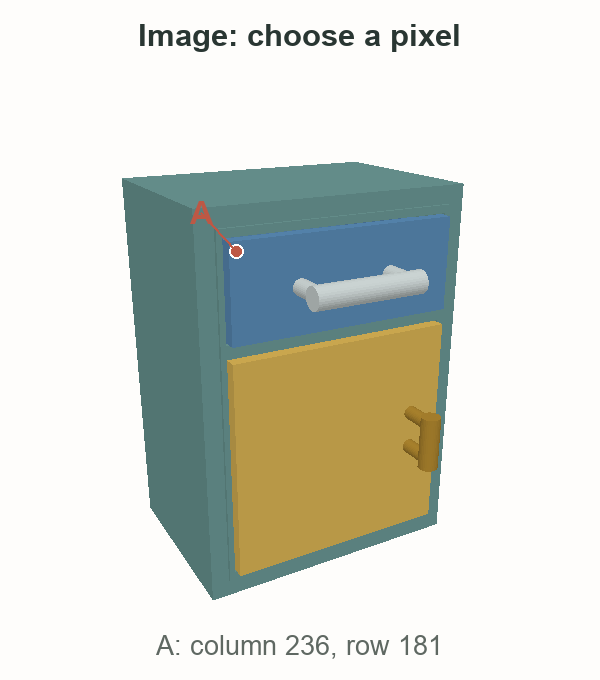

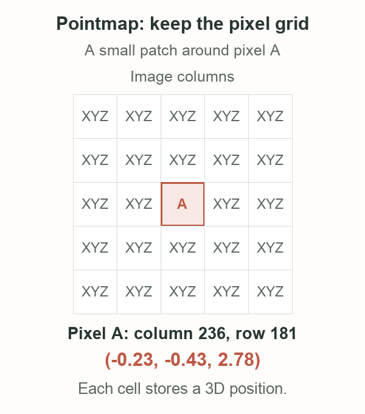

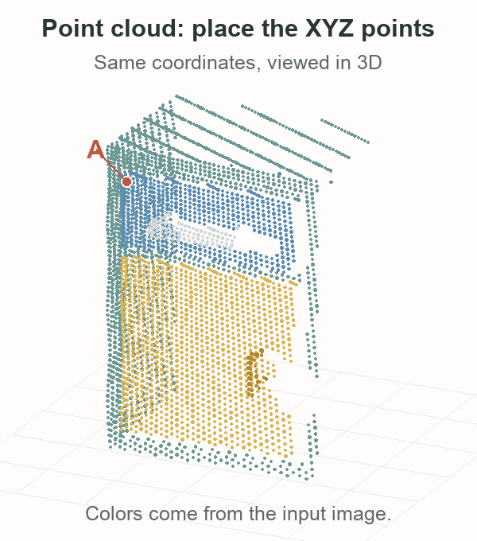
| Description | Pointmap | Point cloud |
|---|---|---|
| How it is organized | An image-shaped grid. Each pixel address leads to an XYZ position. | A collection of XYZ positions, often with colors or other attributes. |
| For the cabinet | Look up pixel A to find its predicted surface position. | View points across the drawer, handle, and panels together in 3D. |
Turning a pointmap into a point cloud keeps the 3D coordinates and changes how we organize or display them. Colors can be copied from the corresponding image pixels. A cloud may also retain the original pixel addresses as extra information. The dots above are a subset of the visible surface samples, spaced out for clarity.
Align several image pairs
With three photographs, we can process Left + Front and Front + Right. Each pair produces two pointmaps in its own shared frame. To combine the pair results, we need one coordinate system for the whole cabinet.
The front image occurs in both pairs. Its pixels therefore connect two predictions of the same surfaces. Global alignment adjusts the pair results and shared geometry so that these overlapping observations agree as closely as possible. Position, orientation, and relative scale are brought into agreement. For example, the two estimates of the drawer corner A should meet in the combined reconstruction. Multi-view alignment.

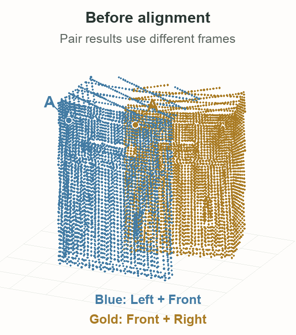

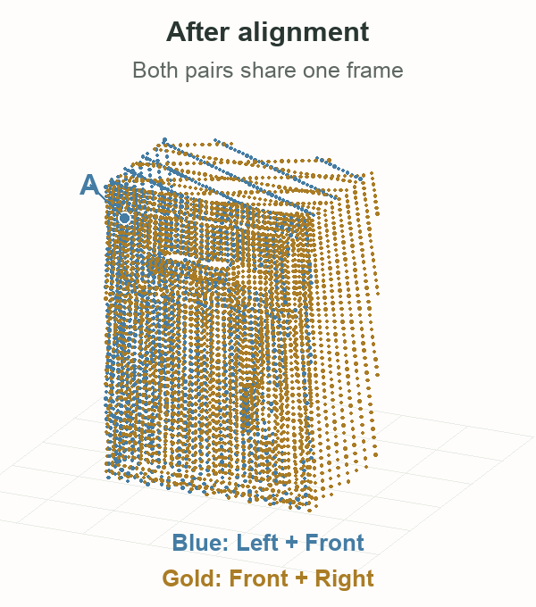
Blue and gold identify the two image pairs. The script deliberately offsets one point set and aligns it using known shared points. This illustrates the purpose of alignment; actual DUSt3R estimates can retain errors.
DUSt3R: predict, then align
- 01Overlapping photosForm image pairs
- 02DUSt3R predictionsTwo pointmaps per pair
- 03Align pair resultsOne shared reconstruction
Keep the reconstruction
The aligned positions give a point-cloud reconstruction to inspect. The DUSt3R workflow can also recover camera poses, focal lengths, and depth maps. Keep the original images with these estimates. Building connected surfaces is a further step, described in Section 2.7.7; Gaussian or NeRF fitting requires the data preparation described in Section 2.7.6. The official example shows how to retrieve the cameras and points.
For more on confidence, alignment, and scale, see the DUSt3R paper and official implementation.
2.7.5 VGGT: predict cameras and geometry
VGGT (Visual Geometry Grounded Transformer) uses a pretrained neural network to predict cameras and geometry directly from images. During pretraining, the network learned from many scenes how image information relates to camera viewpoints and 3D surfaces. Its design and training give it specific outputs: camera parameters, depth maps, pointmaps, and tracks for selected image points. VGGT project.
For this cabinet, we load the trained model and provide the left, front, and right photographs together. The model uses its learned settings to predict the camera information and visible surface geometry for this cabinet. Those settings stay fixed while it makes the predictions; the same trained model can then process photographs of another object. This use of a trained model is called inference. VGGT accepts one or multiple images; this example uses three overlapping views. Official inference example.


These three images show the same stationary cabinet. A marks the same drawer corner in each view. VGGT can also track a selected image point: give it A’s pixel location in one image, and it predicts where that detail appears in the other views.
The cabinet images and output diagrams below are script-generated teaching illustrations. They explain the quantities VGGT predicts. See the VGGT project for results produced by the trained model.
VGGT jointly processes the supplied views and directly predicts cameras and geometry. Its pointmaps use the same pixel-to-3D organization introduced in the DUSt3R example. DUSt3R’s workflow builds the multi-view result from pair predictions and alignment; VGGT provides a joint prediction from the image set, with optional later refinement.
VGGT: predict cameras and geometry
- 01InputCabinet images
- 02VGGTA pretrained geometry model
- 03OutputsCameras + depth / 3D points

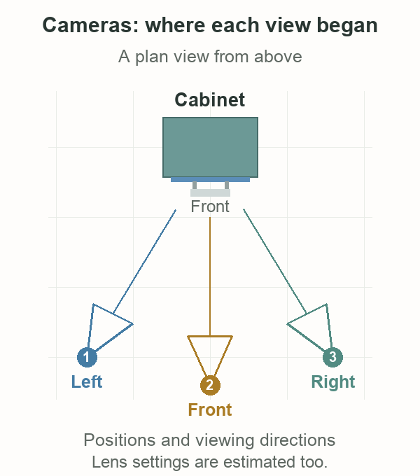

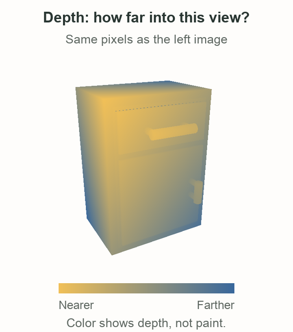

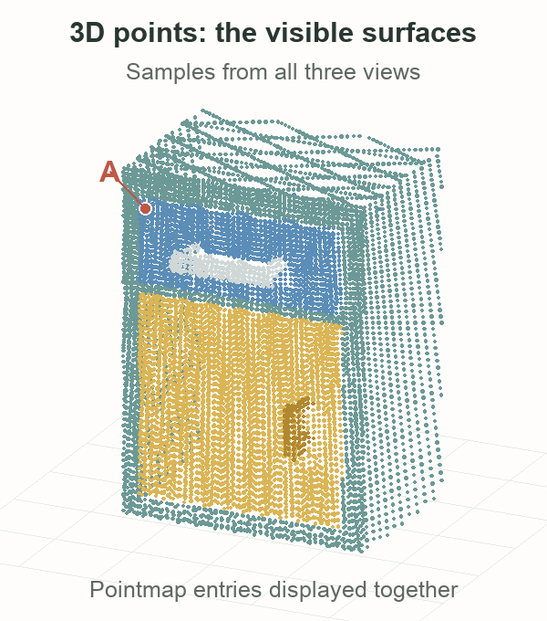
The depth and point predictions already describe geometry. Displaying the predicted surface points in a 3D viewer gives a point-cloud reconstruction of the cabinet. The official VGGT viewer provides examples of inspecting these results.
For the next stages in this book, we keep the photographs and export the estimated cameras and 3D points. VGGT’s export tool writes them in COLMAP’s file format, which reconstruction software can read.
To obtain a Gaussian scene, continue with a Gaussian training method. The official VGGT integration passes the images, estimated cameras, and points to gsplat[5], a Gaussian rendering and training library. Training then adjusts the Gaussians to match the cabinet photographs.
Three methods for the same reconstruction task
All three workflows can recover cameras and 3D geometry from photographs. Given the same cabinet views, COLMAP calculates these estimates from matches within the supplied photographs. VGGT applies what its network learned during pretraining to predict them. DUSt3R also uses a pretrained network, with image-pair prediction followed by alignment and camera recovery. Their steps and outputs are:
| Method | Main steps | Result at this stage |
|---|---|---|
| COLMAP: sparse SfM | Compute from current photo matches. Match cabinet details across views; use their image positions to estimate cameras and triangulate 3D points, then refine the estimates. | Estimated cameras and sparse points. COLMAP’s dense tools can continue from here. |
| DUSt3R | Predict with a pretrained model, then align. Predict pointmaps for cabinet image pairs; align the pair results and recover cameras. | Dense surface positions, with cameras and depth recoverable through the workflow. |
| VGGT | Predict with a pretrained model. Process the cabinet images together using the trained network and directly predict cameras and geometry. Optional refinement can follow. | Camera parameters, depth, pointmaps, and tracks for selected image points. |
Choose one of these reconstruction routes, then prepare its outputs for the next task. The following sections explain how different downstream methods use the cameras and geometry.
2.7.6 Where do these outputs go next?
Section 2.7 prepares photographs, camera parameters, and initial geometry estimates. Sections 2.8 and 2.9 use that preparation in two alternative reconstruction methods: fitting 3D Gaussians or training a NeRF network. Each method builds a 3D representation whose rendered views match the cabinet photographs.
Both methods repeatedly use 3D → 2D rendering, introduced in Section 2.4: render the current representation, compare it with a photograph from the same camera, and use the differences to improve the representation.
Continue with 3DGS
Inputs: photographs, camera parameters, and estimated 3D points.
- Use estimated 3D points as starting locations for Gaussians.
- Use each camera to render the current Gaussians from its photograph’s viewpoint.
- Compare with that photograph and adjust the Gaussians.
Saved result: the fitted Gaussian parameters.
Follow the cabinet in Section 2.8Continue with NeRF
Inputs: photographs and camera parameters.
- Use each camera to construct rays through image pixels.
- Sample positions along those rays and query a network for color and density.
- Render pixels, compare with the photographs, and adjust the network.
Saved result: a trained network that describes the cabinet.
Follow the cabinet in Section 2.9The 3D points play different roles. In the 3DGS route, estimated surface points provide starting locations for blobs. In the original NeRF route, the renderer chooses query locations along camera rays, including in empty space. Each query position and viewing direction is sent to the NeRF network; the samples span the ray rather than just the estimated surfaces.
The 3DGS and NeRF worked examples use COLMAP-style camera preparation. The VGGT export offers another way to supply camera and point estimates; the later rendering and fitting stages still need to be carried out.
DUSt3R estimates can serve a similar preparation role when converted for the chosen implementation. This involves checking camera conventions, image sizes, scene scale, and file format. The pointmap or point cloud is a geometry result; fitting a Gaussian scene or NeRF is a separate stage.
A mesh is another possible reconstruction output. A workflow can estimate denser geometry and build connected surfaces from it; COLMAP’s dense reconstruction tools[6] support that route.
Further details: original 3DGS inputs[7] and original NeRF camera preparation[8].
2.7.7 From points to a mesh
To obtain a mesh of the photographed cabinet, we need surface faces as well as 3D positions. This route builds on the cameras and geometry estimated earlier:
- Prepare dense surface points. Starting from sparse COLMAP output, estimate depth across the photographs and combine the results into a dense point cloud. With DUSt3R or VGGT, collect reliable positions from the predicted pointmaps in a shared coordinate frame. These routes supply samples on the cabinet’s panels and handle.
- Estimate a surface from those points. A surface-reconstruction algorithm uses the samples to decide where a continuous surface should lie. It may also use estimates of which way the surface faces. It creates connected faces that follow that surface.
- Save and inspect the mesh. The result contains vertices and faces, as introduced in Section 2.2. Check that the panel shapes, handle, and spaces around moving parts have been captured.
For example, the dense points may mark many locations on the drawer front. The mesh adds surface patches covering the panel between those locations. Around the handle, the reconstructed surface should follow the grip and preserve the opening behind it.
COLMAP’s dense route: photographs + cameras → depth estimates → dense 3D points → a surface mesh. Predicted pointmaps offer another source of dense points for surface reconstruction. The Gaussian and NeRF routes in Sections 2.8 and 2.9 fit blobs or a network to the photographs.
Photo coverage and the surface-reconstruction method affect which details can be recovered. COLMAP’s dense reconstruction tools and Open3D’s surface-reconstruction examples[9] show implementations of this route.
References
- Jacob Munkberg, Jon Hasselgren, Tianchang Shen et al. Extracting Triangular 3D Models, Materials, and Lighting From Images. Proceedings of the IEEE/CVF Conference on Computer Vision and Pattern Recognition (CVPR), 2022.
- Johannes Lutz Schönberger, Jan-Michael Frahm. Structure-from-Motion Revisited. Conference on Computer Vision and Pattern Recognition (CVPR), 2016.
- Shuzhe Wang, Vincent Leroy, Yohann Cabon et al. DUSt3R: Geometric 3D Vision Made Easy. arXiv preprint arXiv:2312.14132, 2024. arXiv
- Jianyuan Wang, Minghao Chen, Nikita Karaev et al. VGGT: Visual Geometry Grounded Transformer. arXiv preprint arXiv:2503.11651, 2025. arXiv
- Vickie Ye, Ruilong Li, Justin Kerr et al. gsplat: An open-source library for Gaussian splatting. Journal of Machine Learning Research 26(34):1–17, 2025.
- Johannes Lutz Schönberger, Enliang Zheng, Marc Pollefeys, Jan-Michael Frahm. Pixelwise View Selection for Unstructured Multi-View Stereo. European Conference on Computer Vision (ECCV), 2016.
- Bernhard Kerbl, Georgios Kopanas, Thomas Leimkühler, George Drettakis. 3D Gaussian Splatting for Real-Time Radiance Field Rendering. arXiv preprint arXiv:2308.04079, 2023. arXiv
- Ben Mildenhall, Pratul P. Srinivasan, Matthew Tancik et al. NeRF: Representing Scenes as Neural Radiance Fields for View Synthesis. arXiv preprint arXiv:2003.08934, 2020. arXiv
- Qian-Yi Zhou, Jaesik Park, Vladlen Koltun. Open3D: A Modern Library for 3D Data Processing. arXiv:1801.09847, 2018. arXiv